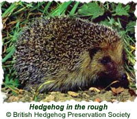

|
How to Create a Wildlife Garden
The following information was written by Pennie Keech and has been reproduced with her permission.

Introduction
The Gledhow Valley Woods are teeming with wildlife and wild flowers. The following information will help you turn your garden into a haven for wildlife as well.
Plants for a Wildlife Garden
- Ornamental thistles, grasses, teasel, sunflowers - leave seeds on plant through winter.
- Roses and fruit trees attract greenfly, but blue tits remove them!
- All kinds of herbs, wildflowers and cottage flowers - nectar rich for bees and butterflies.
- A mix of elder, dog rose, blackthorn, hawthorn and hazel for hedging.
- Flowers such as buddleia, cotoneaster, rosa rugosa, marjoram, lavender, borage, bronze fennel, hollyhocks, limnanthes douglasii, phacelia tenacetifolia, nepeta, honesty, sedum spectabile, michaelmas daisy, sweet rocker, night-scented stock, nettle, honeysuckle, ox-eye daisies, corn marigolds, knapweeds, poppies, corncockles, daphne mezereum, potentilla fruticosa, wild flower seed mix.
- Pond plants such as iris pseudacorus, sagittaria, figwort, purple loosestrife.
Planting Tips
- Mow the wildflower area in the autumn when seeds are set and keep the area tidy over the winter. Perennial wildflowers can be bought from the BTCV and some garden centres.
- Use blood, bone and fishmeal fertiliser - no sulphate of ammonia, no superphosphate, and no herbicides.
- Try to plant trees and shrubs native to your area as native plants bring the birds and insects to your garden.
- Grow different types of plant side by side to discourage pests; do not plant the same crop on the same patch of ground two years in a row to rehabilitate the soil.
- Dogwood elderberry, cherry and sunflowers attract birds the most.
- Remove pests and weeds by hand early in the morning, wearing gardening gloves - no bonfires!
- Mulch the compost, bark chippings or gravel around the plants to prevent loss of water from the soil.
- Compost your fallen leaves. Urination on the heap adds to the quality of the compost!! Grass cuttings should be used as a mulch or as fertiliser.
- Make humus for the garden from composted garden and food waste.
Attracting Wildlife
If you stop using pesticides, you'll be able to attract the following wildlife to your garden...

- Bats
Bat boxes can be bought from many garden centres.
- Bees
Bees help by pollinating flowers and vegetables. You can attract them by planting snapdragons, delphiniums, lupins, clover, bugle and low-growing wildflowers.
- Birds
The RSBP sell boxes for various birds, as do many garden centres. Feed wild birds daily, especially during the winter period, not forgetting fat balls, suet and seed balls, dog and cat biscuit, leftover cat food, apples, pears, good quality peanuts and dried fruit.
- Butterflies, lacewings and hoverflies
They help by eating aphids. You can attract them by planting fennel, all kinds of daisies, hebe, buddleia, marjoram, lavender, sedum spectabile, and cottage garden flowers.
- Frogs
Piles of logs, piping dug underground with an outlet above ground, and carefully managed compost heaps are ideal. Your pond will attract frogs, newts and toads which in turn will eat your garden pests.
- Hedgehogs
You can build a simple hedgehog house using two large paving stones sandwiched together with bricks, filled with straw or leaves. You can also buy purpose built boxes from the British Hedgehog Preservation Society. See our "How to Build Hedgehog Homes" page for more details.
- Lacewings
Lacewings help by eating up to 50 aphids per day, as well as mealy bugs and other soft bodied insects. You can attract them with purpose built nests, or by hanging tubing from trees.
- Ladybirds
Ladybirds help by eating mites and aphids. You can attract them by drilling 6mm holes into 5cm x 5cm pieces of timber and hanging them in trees.
- Moths
You can attract moths by planting cosmos, nicotiana, and Iceland poppies.
- Squirrels
Squirrels will eat nearly anything you offer them. They love cheap biscuits from the supermarket as well as peanuts and seeds.
- Toads
There are toad pots that can be bought and put next to your pond, or tucked away behind a hut or garage.
Getting Rid of Pests the Organic Way
- Blackfly
Pinch out the growing tip where the blackfly can be found; use derris or soft soap* sprayed onto plants.
- Cabbage Root Fly
Protect newly transplanted plants with a 15cm piece of card, or a 15cm length of damp course (from a builder's merchant). Cut a slit in it and make a hole in the middle that goes round the stem.
- Cabbage White Butterfly
Remove eggs by hand from under leaves, plant nasturtiums nearby for the butterfly to lay them on, or plant extra cabbages and enjoy the butterflies!
- Carrot Root Fly
Cover young plants with fleece, sow seeds in raised beds, plant garlic or onion nearby, or avoid sowing in April or May.
- Greenfly
Use a solution of soft soap* (not washing-up liquid) sprayed on plants, or encourage predators of greenfly.
- Slugs and Snails
Go out every night and collect them with a trowel and contained, and dispose of them as you feel best; remove all garden waste or equipment that they can hide under; spray Jeyes fluid over the garden in January/February to kill slugs eggs in the soil; put out a tub of beer tucked away under plants; or encourage birds and hedgehogs to the garden by planting as described above.
- Vine Weevil
Use Provado to kill grubs in plant pots.
- Whitefly
Use a solution of soft soap*; buy Encarsia Formosa (the parasite wasp) by mail order for the greenhouse; or use sticky traps.
- Other Ideas
- Soft soap* and nicotine kill aphids, scale insects and caterpillars. Soak 1 cigarette in 1 litre of water, strain and spray (but not near tomatoes). This will kill aphids and caterpillars but not beneficial insects.
- Mix 6 cloves of garlic, 1 minced onion, 1 tablespoon of hot dried pepper, and 1 tablespoon of pure soap in 4 litres of hot water, strain and spray. This will (organically) kill a wide variety of cabbage worms, caterpillars and other insects.
- Natural plant controls include onions, garlic, sage, rosemary, thyme, peppermint, lavender, wormwood (absinthe), French marigolds, chrysanthemums, and basil.
- Encourage ladybirds (which eat aphids, mealy bugs and other soft bodied insects), lacewings (which eat mites and aphids), ground beetles (which eat slugs and caterpillars), and spiders (which eat flying insects).
*When looking for "soft soap", ask for "horticultural soap". The best places to find it are in shops that sell organic gardening supplies, or garden centres.
If you have any other hints and tips for creating and maintaining a wildlife garden, or have any photographs we can use (especially if they were taken in or near the Woods themselves), please contact us.
|
|